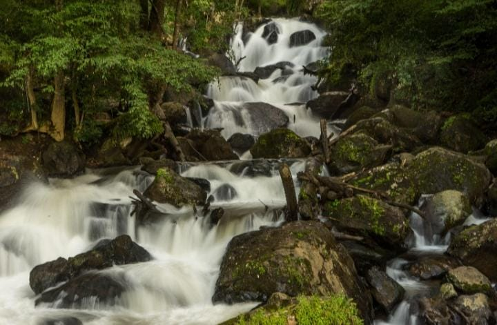
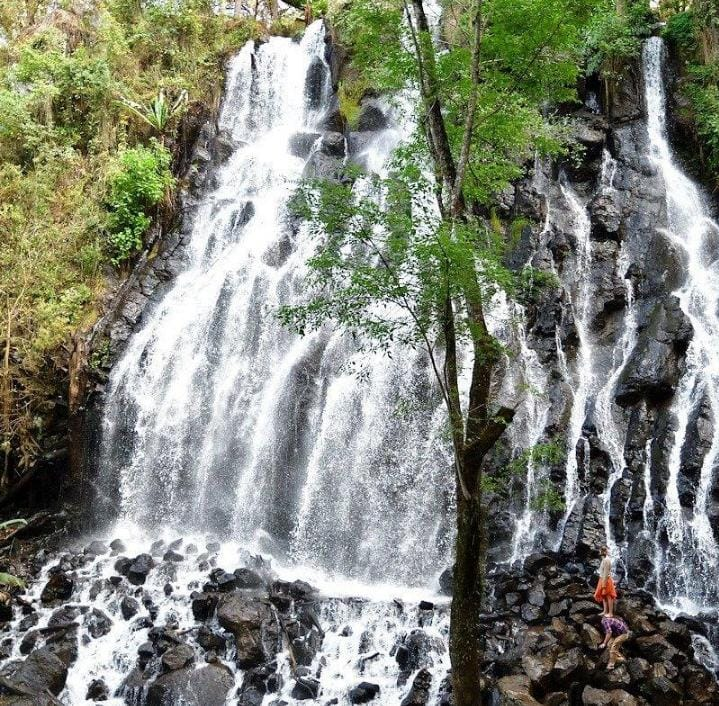
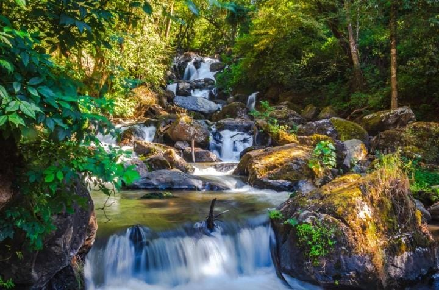

La Cascada El Molino es un atractivo natural ubicado en la zona de Avándaro. Se distingue por sus caídas de agua sobre formaciones rocosas y por el ambiente fresco que ofrece el bosque que la rodea. El sonido del río, la vegetación y sus paisajes hacen de este sitio un lugar agradable para quienes buscan tranquilidad y contacto con la naturaleza.
Valle de Bravo cuenta con hermosos atractivos naturales donde el agua, la vegetación y los paisajes boscosos crean espacios ideales para disfrutar del ecoturismo, la fotografía y el contacto con la naturaleza. Entre sus lugares más representativos se encuentran la Cascada El Molino, en Avándaro, y la Cascada Velo de Novia, en el Parque Velo de Novia.

La Cascada Velo de Novia es uno de los atractivos naturales más representativos de Valle de Bravo. Tiene una impresionante caída de agua de aproximadamente 35 metros de altura, cuya forma recuerda a un largo velo blanco, de ahí su nombre. stá rodeada de un hermoso bosque de pinos y abundante vegetación. El parque ofrece senderos para caminar, espacios para descansar y miradores desde donde se puede contemplar la belleza del paisaje.
En el corazón de Avándaro se encuentra el Parque Ecoturístico Velo de Novia, un maravilloso espacio natural que destaca por su impresionante cascada de aproximadamente 35 metros de altura. Rodeado de bosques, abundante vegetación y el sonido del arroyo San Juan, este destino ofrece una experiencia única para quienes desean descubrir la riqueza natural de Valle de Bravo. Sus senderos permiten recorrer paisajes llenos de vida, mientras que sus espacios recreativos invitan a disfrutar de caminatas, paseos a caballo, fotografía y convivencia familiar. Es uno de los lugares ideales para conocer la belleza ecológica del municipio y apreciar la importancia de conservar sus recursos naturales.

La Cascada El Molino representa una alternativa para el turismo de naturaleza en Avándaro. Su entorno permite a los visitantes conocer los recursos naturales del municipio y disfrutar de actividades recreativas al aire libre. Además, el río y la vegetación forman parte del paisaje ambiental de Valle de Bravo, por lo que es importante conservar el agua, evitar tirar basura y respetar los espacios naturales.
Descubre la belleza natural de la Cascada El Molino, ubicada en la zona de Avándaro, Valle de Bravo. Este maravilloso rincón natural cautiva por sus pequeñas caídas de agua que recorren enormes formaciones rocosas, acompañadas del sonido relajante del río y la frescura de los bosques de pino y oyamel. Sus senderos, escalinatas y paisajes ofrecen una experiencia agradable para quienes desean explorar la naturaleza, tomar fotografías y disfrutar de la tranquilidad que caracteriza a esta región. Es un destino que invita a descubrir, apreciar y conservar la riqueza natural de Valle de Bravo.
¡Conoce, disfruta y comparte nuestras maravillas!
VER VIDEO EN TIKTOK